Articulated robots - Lab 1
Robot Operation, Coordinate Recording, and Drawing
Instructor: Prof. Sangram Redkar
Authors:
- Sai Srinivas Tatwik Meesala: smeesala@asu.edu
- Rajesh S Aouti: raouti@asu.edu
Robot: Dobot Magician Lite
What You Will Do
In this lab, you will learn how to control a robotic arm safely. You will move the robot in the X, Y, and Z directions, record robot positions, and program the robot to draw the letters C I M.
Deliverables
- Lab Report – A comprehensive formal document including procedure, results, observations (with supporting images), key learnings, conclusions, and complete answers to the assigned question.
- Demonstration Video(s) – Video evidence of successful execution, uploaded and shared via accessible links.
- Code
Lab Check-Off – Notify the teaching staff immediately after successful compilation and execution for verification.
Learning Goals
By the end of this lab, you will be able to:
- Identify the main parts of the Dobot Magician Lite.
- Safely move the robot using software controls.
- Explain how X, Y, and Z movement changes the robot position.
- Record robot positions using coordinates.
- Program the robot to draw the letters C, I, and M.
- Compare the planned drawing with the robot’s actual drawing.
Materials Needed
- Dobot Magician Lite
- Magic Box (optional)
- Computer with DobotLab installed
- USB cable and power adapter
- Pencil holder and pencil
- Blank paper or graph paper
- Ruler
- Tape
Before You Start
- Make a note of the robot number you are working with
- All robots are labeled.
- Read the safety rules.
- Check that all materials are present.
- Keep hands away from the robot while it is moving.
Additional Learning Resources
1. Dobot Lite curriculum: See LINK.
2. Learn basic Python: See LINK.
3. Learn Object-Oriented Programming with Python: See LINK
4. More about Dobots: See LINK.
5. Learn about using DobotStudio: See LINK.
6. Learn about using DobotLab: See LINK.
Activity 1: Introduction to Robots:
A robot is a machine that can sense, move, and follow instructions. In this lab, you will use the Dobot Magician Lite, a small robotic arm used for education and training. The Dobot can move in different directions, hold tools, and complete simple tasks. In this lab, it will hold a pencil and draw letters on paper.
Dobot Magician Lite
This is the robotic arm. It moves the pencil to different positions. The Magician Lite is a multi-functional, lightweight, intelligent robotic arm. Students can interact with the Magician Lite using software, hardware, and expansion interfaces to maximize their creative freedom.
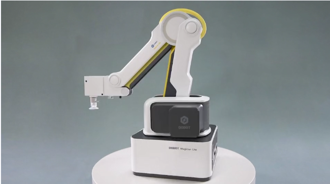
Magic Box (Optional)
This is the control box. It connects the robot to the computer and helps run your program.
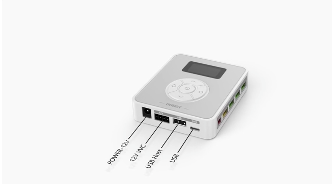
Activity 2: Robot Safety and Setup
Robots can move quickly and with force. Follow these rules before using the Dobot.
Safety
- Keep your hands away from the robot while it is moving.
- Do not pull, push, or force the robot joints.
- Use the unlock button only when your teacher says it is safe.
- Keep wires away from the moving arm.
- Do not place your face near the robot.
- Tell your teacher immediately if the robot makes unusual sounds or stops working.
- Do not change cables while the robot is powered on.
- Clean your workspace before starting the lab.
Please visit the website: https://www.dobot.us/download-center/
Download both:
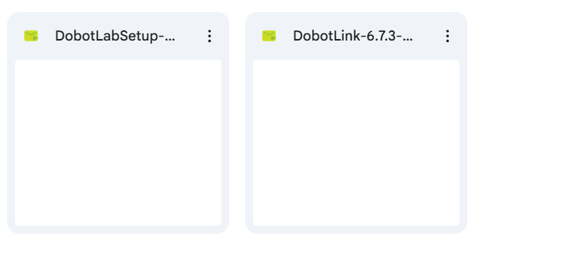
Before connecting the robot, make sure the software is installed.
- Install Dobot Link first.
- Install DobotLab second.
- Open DobotLab after you install both programs.
- Ask your teacher if the robot does not connect.
Materials for This Lab
You should have:
Material | Purpose |
Dobot Magician Lite | Moves the pencil |
Magic Box | Connects the robot and the computer |
Power adapter | Powers the robot |
USB cable | Connects the robot system to the computer |
Pencil holder | Holds the pencil |
Pencil | Draws the letters |
Blank paper or graph paper | Drawing surface |
Ruler | Measures the robot drawing |
Tape | Holds the paper in place |
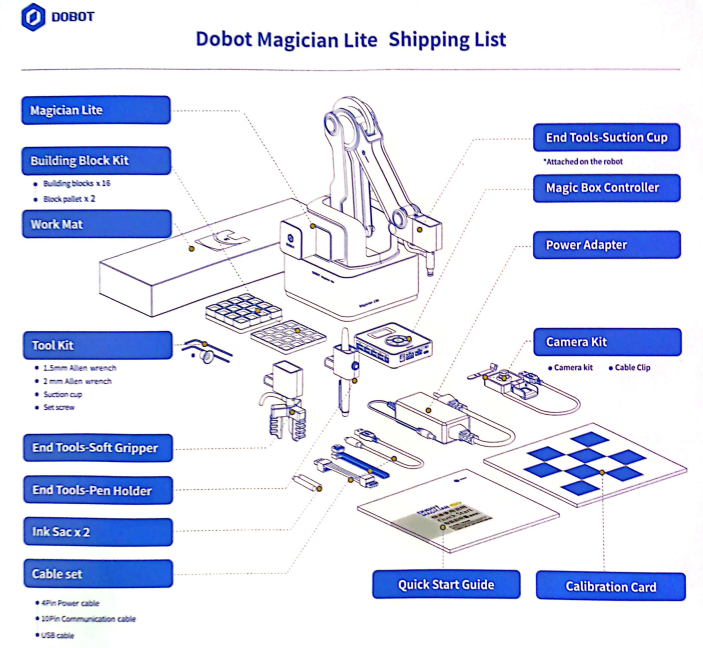
Make sure you have the items above. The Dobot has been unboxed and is already set up for you. You are responsible for maintaining the allocated lab equipment. Damage or loss of the equipment will lead to the disruption of future labs.
Additional Learning Resources
1. Dobot Lite curriculum: See LINK.
2. More about Dobots: See LINK.
3. Learn about using DobotStudio: See LINK.
4. Learn about using DobotLab: See LINK.
Activity 3: Connecting and Controlling the Robot
Connect the Hardware
Step | Action | Done |
1 | Place the robot on a flat table. | ☐ |
2 | Make sure the robot has enough space to move. | ☐ |
3 | Connect the robot power cable to the power adapter. | ☐ |
4 | Connect the Magic Box to power using the 12V connector. | ☐ |
5 | Connect the Magic Box to the robot using the communication cable. | ☐ |
6 | Connect the USB cable from the Magic Box to the computer. | ☐ |
7 | Keep all cables away from the moving robot arm. | ☐ |
Open the Software
1. Power on the robot. Connect the power cable to the robot and the other end to the AC voltage adapter.
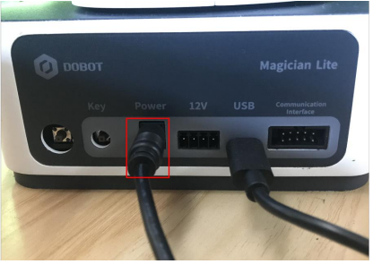
2. Connect the USB cable to your computer. Please ensure that your computer can connect to a Type-A USB cable. If not, you must procure a converter or a Type-C to Type-C cable yourself.
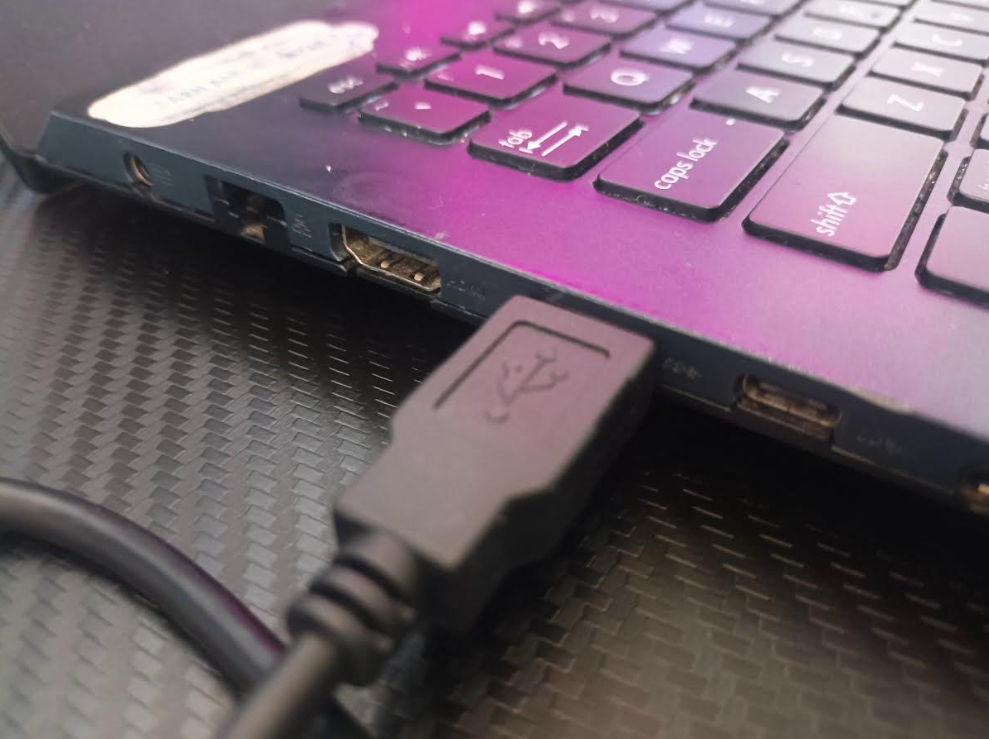
3. (Optional) Connect the MagicBox using the 12V power supply connector and the communication interface cable.
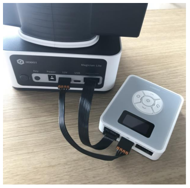
4. Complete all the connections:
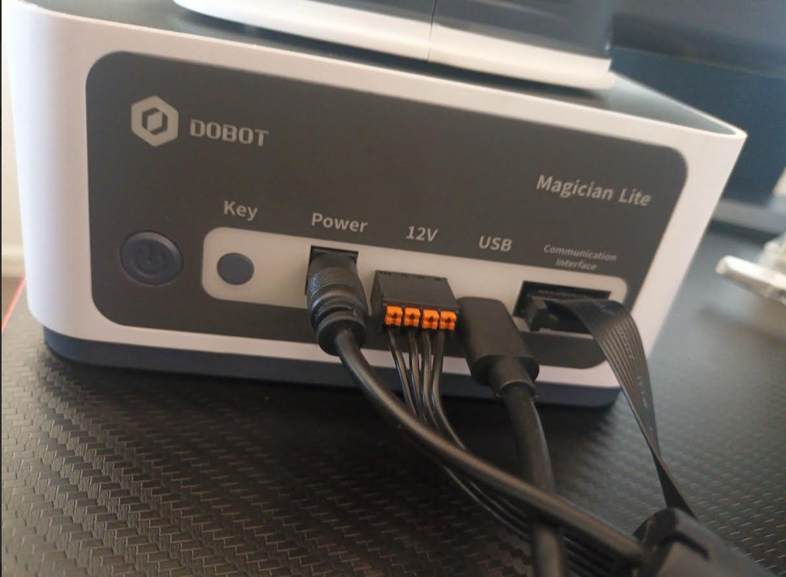
5. Open DobotLab and select DobotBlock Lab.
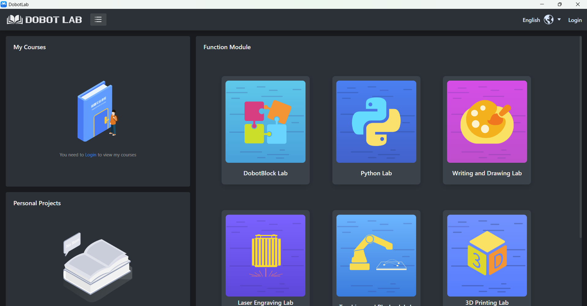
6. Then select the icon (see image below) to connect to the Magic Box device, and then select the Magic Box icon. Choose the robot if you are directly connected to the robot.
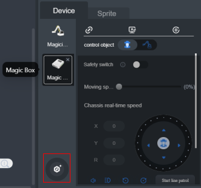
7. To connect to the Magic Box, select the robot control icon. A connection window will appear. If you are using Windows, open Device Manager and check Ports to see which COM port the robot is using. Choose that COM port in DobotLab, then click Connect.
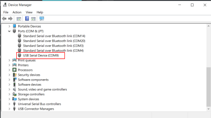
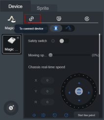
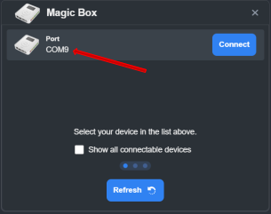
Computer type | How to find the port |
Windows | Open Device Manager and look under Ports |
Mac | Use: ls /dev/tty.* | grep usb |
Linux | Use: ls /dev/tty* |
8. If connected to the Magic Box, add the Magician Lite extension so DobotBlock Lab can control the robot. Click the Extensions icon.
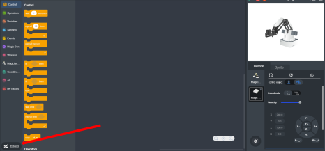
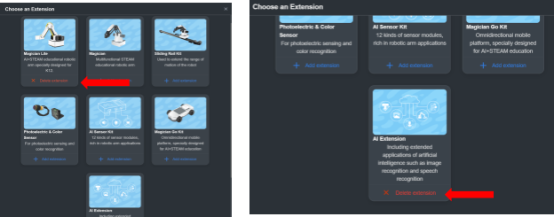
9. Play with the robot and familiarize yourself with DobotLab and the Dobot hardware. See: Link
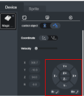
Test | What to do | What changed? |
X movement | Move X by a small amount | __________ |
Y movement | Move Y by a small amount | __________ |
Z movement | Move Z up and down slightly | __________ |
means the program starts to run once you click
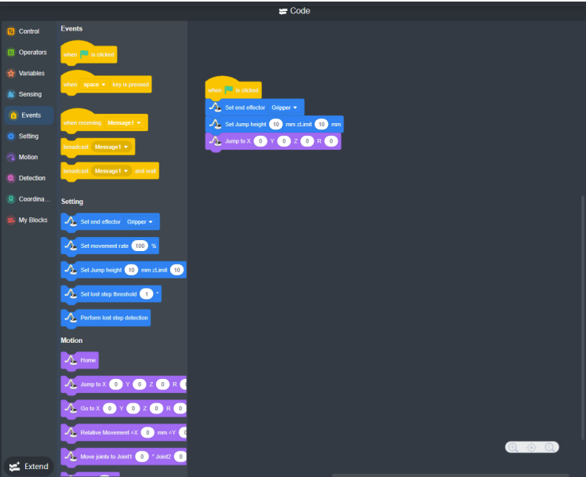
Activity 4: Program the Robot to Draw C I M
We will be performing Chapter 1.1 TP - Robot Axis and Movement from the book: Robot Lite Curriculum: See LINK.
In this activity, you will program the robot to draw the letters C I M. You will first record important points on the paper. Then you will use those points to build a block program that moves the robot through each letter.
Use graph paper if available. AND USE PENCIL. NOT PEN/MARKER. Tape the paper to the table so it does not move while the robot is drawing.
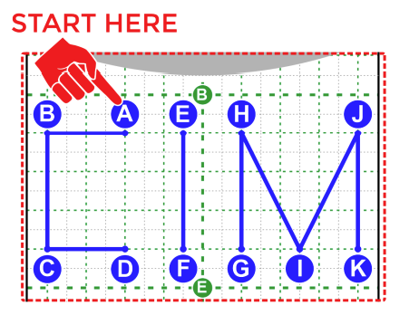
Instruction:
Requirements:
You will record the robot positions needed to draw the letters. These positions are called waypoints.
A waypoint is a saved robot position with X, Y, Z, and R values.
Important terms
- HOME: The robot’s starting position.
- INT: A safe hover height above the paper.
- Drawing point: A point where the pencil touches the paper.
Steps
- Send the robot to HOME.
- Move the robot to a safe height above the paper. Record this as INT.
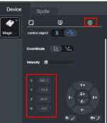
- Attach the pencil holder.
- Place the pencil above Point A.
- Lower the pencil until it lightly touches the paper.
- Record Point A.
- Repeat this process for Points B through K.
Do not press the pencil hard into the paper. The pencil should touch lightly.
JOG BUTTON
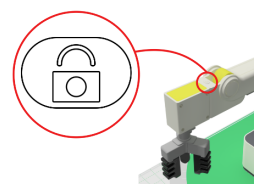
- Make sure to change the end effector to the pencil holder.
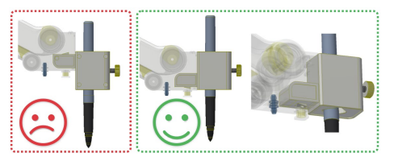
- Open Dobot Lab
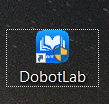
- Click on DobotBlock Lab
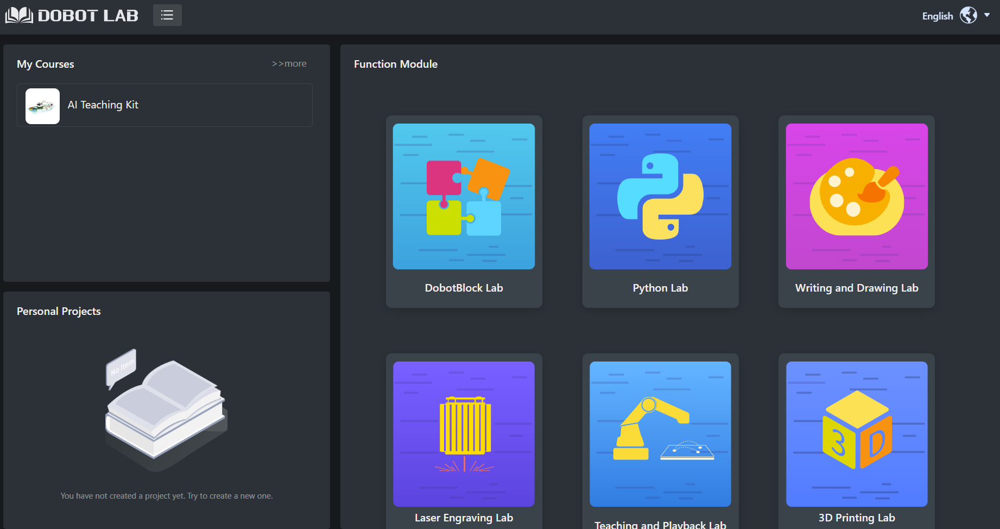
Motion Blocks Used in This Activity
You will use these blocks:
Block | What it does |
Home | Sends the robot to its HOME position |
Jump to X, Y, Z, R | Moves the robot to a saved position |
Relative Move | Moves the robot from its current position by a small amount |
Set R | Sets the rotation angle of the end effector |
See: Link
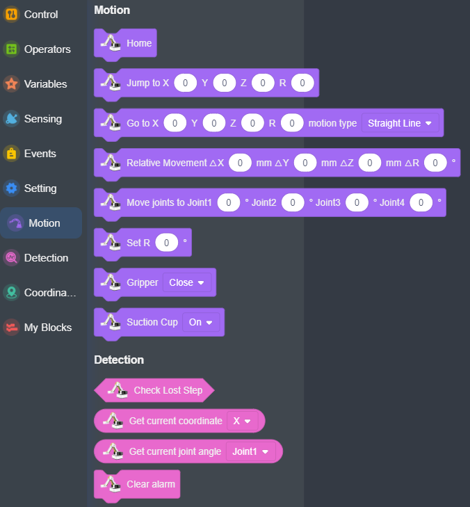
- Now let's start with the lab
Program Plan
Use the recorded points to build the drawing program. On GRAPHPAPER with pencil.
Step | Robot action |
1 | Start at HOME |
2 | Move to INT |
3 | Move above Point A |
4 | Lower the pencil to Point A |
5 | Draw C by moving A → B → C → D |
6 | Lift the pencil back to INT |
7 | Move above Point E |
8 | Lower the pencil to Point E |
9 | Draw I by moving E → F |
10 | Lift the pencil back to INT |
11 | Move above Point G |
12 | Lower the pencil to Point G |
13 | Draw M by moving G → H → I → J → K |
14 | Lift the pencil back to INT |
15 | Return to HOME |
What INT Means
INT is a safe height above the paper. The robot uses INT to move between letters without drawing extra lines.
Example:
- Pencil down: touches the paper and draws.
- Pencil up at INT: moves above the paper without drawing.
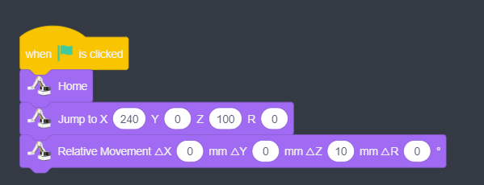
Fill in the table after you record each point. Use the same unit shown in DobotLab.
Keep the R value the same unless your teacher tells you to change it.
Points | x | y | z | r |
A | ||||
B | ||||
C | ||||
D | ||||
E | ||||
F | ||||
G | ||||
H | ||||
I | ||||
J | ||||
K | ||||
HOME | ||||
INT (only z) | - | - | - |
Sample Block Code:
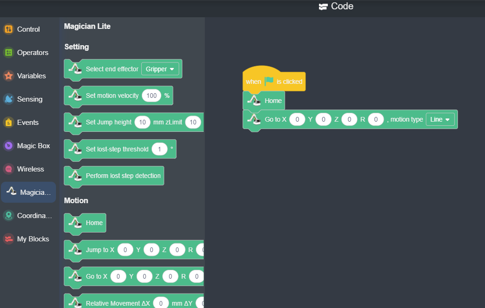
Deliverables
Record a short video of the robot movement and post a
- Suggested: LinkedIn/Github link (or Google Drive link)
Screenshot(s) of your code.
Answer the following question in detail with images and measurements:
- Point Comparison
Compare the coordinates recorded in your table (x, y, z, r values for A–K, INT, HOME) with the actual robot’s drawing of “CIM.” Highlight any deviations in position or shape, and support with measurements and images. - Relative Coordinates
Explain why relative coordinates are required in robotics. Discuss how they simplify programming, improve flexibility, and allow movements to be defined relative to prior positions instead of absolute frames. - Motor Speed and Accuracy
Analyze whether motor speed affects the accuracy of the robot’s end effector path. Provide reasoning based on control, inertia, and system response. - Effect of Increased Mass
Predict (if possible, test) the impact on accuracy if the pencil’s mass were significantly increased, especially when the robot operates at higher speeds. Relate this to inertia, overshoot, and structural deflection. - Accuracy vs. Repeatability
Define the difference between accuracy and repeatability in robotics. Demonstrate by running the CIM program multiple times and comparing positional results to the intended coordinates. - Mathematical Calculation of Point I
Show how to calculate the position of point I if it were not provided. Use geometric reasoning (e.g., midpoint, intersection, symmetry, or vector math) based on the known coordinates of neighboring points.
Additional Info:
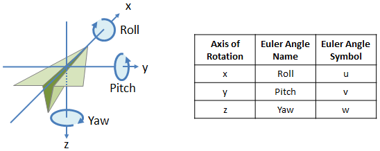